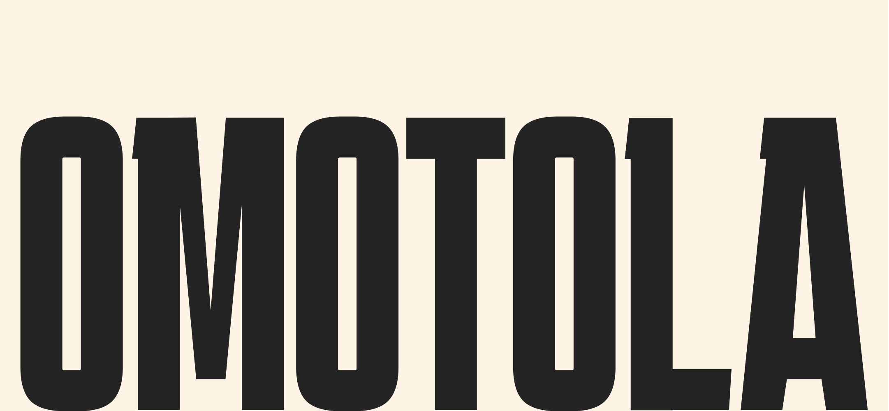

Redhot Concepts Celebrating Omotola’s 30-Year Legacy
Experience the remarkable evolution of Omotola Jalade Ekeinde , an enduring symbol of African cinema and a commanding presence on the global stage. From defining performances that transformed Nollywood to advocacy that echoes beyond borders, her journey is marked by grace, strength, and lasting impact.
Over three decades, she has elevated storytelling, empowered emerging voices, and helped carry African narratives into the heart of the international spotlight.


.jpeg)
For over three decades, Omotola Jalade-Ekeinde has remained a defining force in African cinema — a presence that commands the screen and reshapes global perspectives of African storytelling.
As Nollywood rose into international prominence, she stood at its forefront, carrying powerful narratives beyond borders and redefining the image of a global artist from the continent.
Actress. Director. Singer. Humanitarian. Cultural architect. Her influence extends far beyond performance — it is a legacy etched into the evolving story of world cinema.
Three Decades of Influence
A defining performance in Mortal Inheritance established her as a commanding screen presence and earned Best Actress Overall at THEMA Awards.
A string of powerful performances solidified her status as one of Nollywood’s most bankable and compelling screen figures, expanding her audience across West Africa and beyond.
Her influence began to transcend national boundaries as she gained global visibility, appearing in international conversations about the rapid growth and cultural power of African cinema.
Stepping boldly beyond the screen, she amplified her voice for widows, youth empowerment, and social justice — reshaping what it means to be a public figure in modern Africa.
Named among influential global personalities, her presence extended into worldwide platforms representing Nigerian excellence on stages once distant from Nollywood’s origins.
Named one of the 100 Most Influential People in the World by TIME Magazine, becoming one of the few Nollywood figures to receive global recognition at that level.
Appeared in the U.S. television series Hit the Floor, marking a significant international screen credit and expanding her presence beyond African cinema.
Embracing leadership behind the scenes, she helped shape projects that elevated storytelling standards, contributing to a new era of professionalism within the industry.
With the rise of streaming platforms and digital distribution, her body of work reached new generations — proving timeless relevance in a rapidly evolving media landscape.
With the rise of streaming platforms and digital distribution, her body of work reached new generations, proving timeless relevance in a rapidly evolving media landscape.
United Nations World Food Programme (WFP)
Appointed Goodwill Ambassador in 2005, she has supported anti-hunger initiatives across Africa, including official missions to Sierra Leone and Liberia, advocating for maternal health and food security programs.
Omotola Youth Empowerment Programme (OYEP)
Founder of OYEP, an initiative focused on youth empowerment through entrepreneurship training, leadership conventions, and support programs for widows and vulnerable communities in Nigeria.
Amnesty International
Publicly supported advocacy efforts addressing human rights, gender equality, and environmental accountability in the Niger Delta region.

Legacy in Motion
Known across continents as Omo Sexy, Omotola Jalade-Ekeinde represents a rare convergence of elegance, power, and cultural transformation.
Performances in landmark titles such as Ties That Bind, Alter Ego, and Mortal Inheritance secured her multiple honors including Actress of the Year, Best Actress, and Best Actress Overall. Across her career, she has accumulated an extraordinary body of recognitions for both performance excellence and cultural influence.
From award-winning performances in defining Nollywood titles to humanitarian initiatives that uplift widows and youth, her influence extends beyond cinema into social architecture.
Today she stands not only as an actress, but as a global cultural envoy, bridging art, activism, and generational legacy.